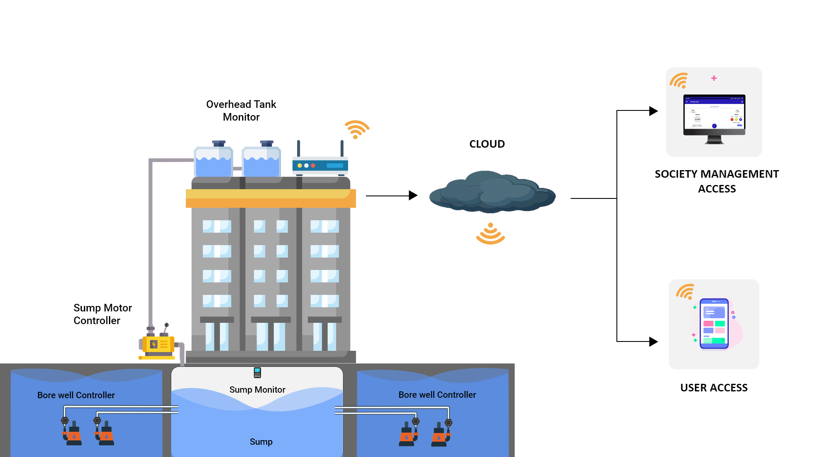
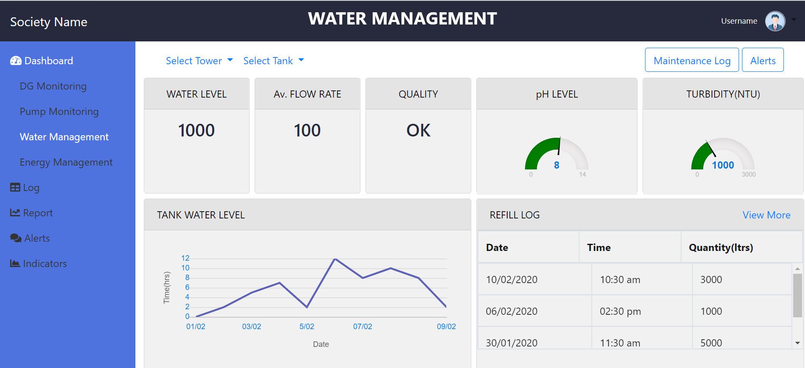

Kfx SCP architecture is modular and configurable. The water management module provides a rich feature to profile water at various points of consumption, such as common/public utilisation, resident utilisation, and forecasting water requirements with AI/ML models based on historical data.
Kfx SCP platform is multi-tenant and multiuser, enabling data metrics and forecasts for their target users, as well as from a block/zonal level perspective. Kfx SCP automates allied services like pumps to fill storage tanks and identifies leakages. The cost of consumption is computed intelligently using data points.

